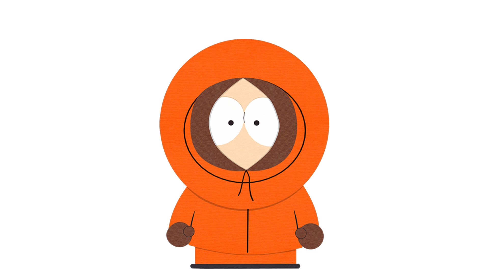

KENNY
Él es Kenny, un personaje principal de South Park, basicamente el amigo pobre del grupo.
¡Oh Dios mío, mataron a Kenny! La página del personaje más resistente de South Park.
Ver galería
Él es Kenny, un personaje principal de South Park, basicamente el amigo pobre del grupo.

Luego de la pandemia del Covid-19, Kenny se convirtió en un hombre famoso e inento construir una maquina del tiempo para que sus amigos no se separaran.

Ya se ha comprobado en varios episodios que Kenny es inmortal, cuando muere vuelve a despertar en su cama al día siguiente, recordando solo él lo que había pasado.

Debajo del abrigo naranja, Kenny es un chico normal de pelo rubio, que a pesar de ser pobre siempre esta aseado con su pelo lacido.

Uno de los alter egos de Kenny es la princesa Kenny, quien aparece cuando él y sus amigos juegan a hechizeros y elfos.

Es el segundo alter ego de Kenny que aparece cuando juega con sus amigos a los super heroes, su poder es la inmortalidad y qwue nadie sabe quies es.

El mejor amigo de Kenny y a quien siempre sigue en sus locuras es Erick Cartman, quien es basicamente el protagonista principal de la serie.

Sun grupo de amigos con los que normalmente tiene aventuras son Stan, Kyle y Cartman, a quienes siempre ayuda o ellos lo ayudan a él, son los mejores amigos.